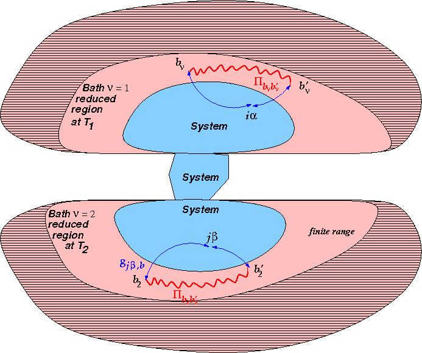

fix gle2baths command
Syntax
fix ID id-group gle2baths Delta seed id-group_bath1 T1 mass_aDOF_1 doffile1 filename_dof_file1 bathfile1 filename_bathcoef_file1 id-group_bath2 T2 mass_aDOF_2 doffile2 filename_dof_file2 bathfile2 filename_bathcoef_file2
- ID, group-ID are documented in fix command
- id-group = group-ID for the central system on which to perform the GLE dynamics
- gle2baths = style name of this fix command
- Delta = small real number (usually 1% or smaller) for the calculations of the derivatives of the forces between the central region and the bath-regions
- seed = random number seed to use for generating noise (positive integer)
- id-group_bath1, id-group_bath2 = group-ID for the atoms in the bath $\nu$ = 1, 2 reduced regions (Note that these atoms are kept frozen during the GLE-2B run)
- T1, T2 = temperature of the bath $\nu$ = 1, 2
- mass_aDOF_1, mass_aDOF_2 = mass of the auxiliary DOF associated with the bath $\nu$ = 1, 2
- filename_dof_file1, filename_dof_file2 = name of the files containing the set of parameters $\{ \tau_{k_\nu}, \omega_{k_\nu} \} $ for the auxiliary DOF $k_\nu$ = 1, ..., $N_\nu^{\rm aDOF}$ associated with the bath ν = 1, 2
- filename_bathcoef_file1, filename_bathcoef_file2 = name of the files containing the set of parameters $\{ c_{b_\nu}^{(k_\nu)} \}$ for the auxiliary DOF $k_\nu$ associated with the bath $\nu$ = 1, 2
Examples
fix 555 system_atoms gle2baths 0.01 2 699483 bathL_reduced 1100.0 32.0 doffile1 gle_vdofL_info.dat bathfile1 gle_bathL_atoms_info.dat bathR_reduced 400.0 32.0 doffile2 gle_vdofR_info.dat bathfile2 gle_bathR_atoms_info.dat
Description
Apply the Generalized Langevin Equation (GLE) thermostats (2 independent thermal baths $\nu$ = 1,2) as described in (Ness2016) $$\frac{dr_{i\alpha}}{dt} = p_{i\alpha} / m_i$$ $$\frac{dp_{i\alpha}}{dt} = F_{i\alpha}(\mathbf{r}) -\int_{-\infty}^{t}{\rm d}t' \sum_{\nu, i'\alpha'} K^{(\nu)}_{i\alpha,i'\alpha'}(t,t';\mathbf{r}) \dot{r}_{i'\alpha'}(t') + \sum_\nu \eta^{(\nu)}_{i\alpha}(t;{\bf r}) ,$$
where $F_{i\alpha}$ is the total force (including polarisation effects of the atoms of the baths) acting on atom $i$, of the central region, in the direction $\alpha=x,y,z$, the stochastic forces (colored noise $\eta^{(\nu)}_{i\alpha}(t;{\bf r})$) are associated with each independent bath $\nu$ and $K^{(\nu)}_{i\alpha,i'\alpha'}(t,t';\mathbf{r})$ is the friction (memory) Kernel.
The latter is related to the vibrational properties of the baths, described by their respective polarisation matrix $\Pi_{b_\nu,b'_\nu}(t-t')$ where the baths degrees of freedom (DOF) $b_\nu \equiv l_1 \gamma$ correspond to bath atom $l_\nu$ and Cartesian coordinate $\gamma$.
To solve the GLE, each degree of freedom $i\alpha$ in the thermostatted group (id-group) is supplemented with two sets of auxiliary degrees of freedom (aDOF) associated with the sets of parameters $\{ c_{b_\nu}^{(k_\nu)}, \tau_{k_\nu}, \omega_{k_\nu} \} $. These parameters are determined from the mapping of the polarisation matrix $\Pi_{b_\nu,b'_\nu}(t-t')$ onto the following specific analytic form.
After Fourier transformation, the mapping is given by:
$$\Pi_{b_\nu,b_\nu^\prime}(\omega) \rightarrow \sum_{k_\nu} c_{b_\nu}^{(k_\nu)}c_{b_\nu^\prime}^{(k_\nu)} \left[ \frac{\tau_{k_\nu}}{1+(\omega-\omega_{k_\nu})^{2}\tau_{k_\nu}^{2}} +\frac{\tau_{k_\nu}}{1+(\omega+\omega_{k_\nu})^{2}\tau_{k_\nu}^{2}}\right] .$$Before being able to run the GLE-2B fix, one has to determine the sets of coefficients $\{ c_{b_\nu}^{(k_\nu)}, \tau_{k_\nu}, \omega_{k_\nu} \} $. For this, a 3 steps operation should be performed:
(1) Build the entire system, as show schematically below, with "large" bath regions (regions in pink with and without pattern). Define 5 different groups: one group for the central system (group named system_atoms in the example given above) on with the dissipative GLE-2B is performed (here the region in blue), two groups for the two baths, and two further groups for the bath reduced regions (pink regions with no pattern). These groups are named bathL_reduced and bathR_reduced in the example give above. The bath reduced regions should be a subspace of the corresponding "large" bath regions.
